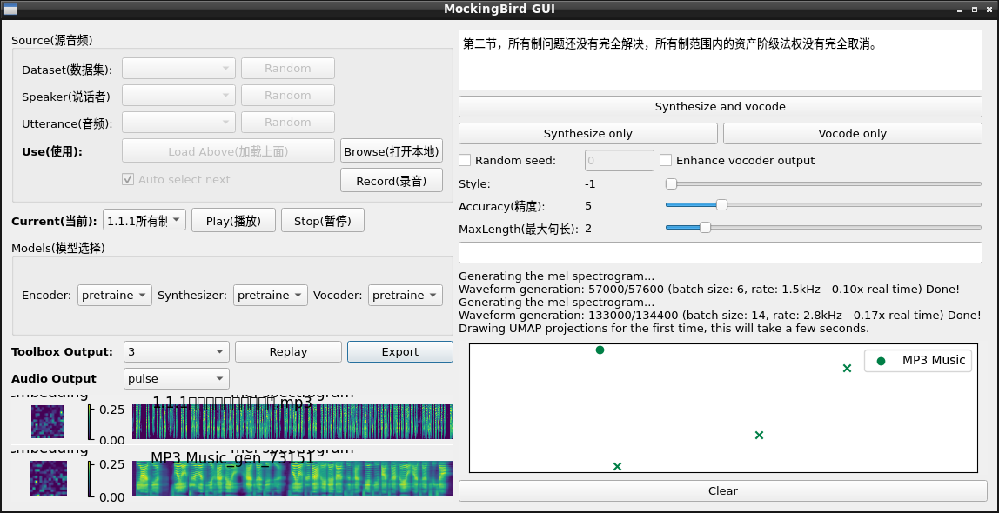

風雷磅礴，一聲雞唱，萬怪煙消雲落！
使用效果：
這些是自然朗讀文件：
條件：
無需NVIDIA顯卡私有驅動軟件和CUDA這一私有軟件。
Pure OS 10.0（包括GNU/Linux、Debian、Ubuntu、Lubuntu、Arch Linux等等都可以使用。）
Python 3.9.6（其他的版本會因為無法安裝numpy 1.19.4而在編譯過程中出錯。）
使用教程：
程序地址：
sudo apt install git
之後
git clone https://github.com/babysor/MockingBird.git
即可。
在GNU/Linux下編譯Python 3.9.6
sudo apt install build-essential libreadline-dev libncurses5-dev libgdbm-dev libnss3-dev libssl-dev libffi-dev zlib1g-dev libncursesw5-dev libc6-dev libsqlite3-dev openssl sqlite3 bzip2 libbz2-dev libgdbm-compat-dev liblzma-dev uuid-dev -y
sudo apt install zlib* p7zip-full libx11-dev -y
下載好Python 3.9.6後cd到文件夾內輸入命令：
./configure --prefix=/usr/local/pyth --enable-optimizations
make
sudo make install
sudo ln -s /usr/local/pyth/bin/python3.9 /usr/bin/pyth
即可。
安裝pip包文件
cd到MockingBird文件夾下，輸入命令：
sudo pyth -m pip install --proxy=‘http://127.0.0.1:8889/’ -r requirements.txt
最後前往使用教程裡的百度網盤：
在GNU/Linux請使用BaiduPCS-Go（GitHub）登錄並下載百度網盤文件。
当实在没有设备或者不想慢慢调试，可以使用社区贡献的模型(欢迎持续分享):
| 作者 | 下载链接 | 效果预览 | 信息 |
|---|---|---|---|
| 作者 | https://pan.baidu.com/s/1iONvRxmkI-t1nHqxKytY3g 百度盘链接 4j5d | 75k steps 用3个开源数据集混合训练 | |
| 作者 | https://pan.baidu.com/s/1fMh9IlgKJlL2PIiRTYDUvw 百度盘链接 提取码：om7f | 25k steps 用3个开源数据集混合训练, 切换到tag v0.0.1使用 | |
| @FawenYo | https://drive.google.com/file/d/1H-YGOUHpmqKxJ9FRc6vAjPuqQki24UbC/view?usp=sharing 百度盘链接 提取码：1024 | input output | 200k steps 台湾口音需切换到tag v0.0.1使用 |
| @miven | https://pan.baidu.com/s/1PI-hM3sn5wbeChRryX-RCQ 提取码：2021 | https://www.bilibili.com/video/BV1uh411B7AD/ | 150k steps 注意：根据issue修复 并切换到tag v0.0.1使用 |
將下載好的pt文件放入MockingBird/synthesizer/saved_models。
接下來輸入命令：
pyth demo_toolbox.py
即可使用。

最後錄製好一份你的音頻的mp3或者wav，然後點擊Browse（打開本地），選擇你朗讀好的文件（時長在7分鐘左右即可）。
接著輸入你想要朗讀的內容（右上角的輸入框），點擊Synthesize and vocode，在跑完Waveform generation後點擊左下角的Export，保存為“文件名.wav”，打開保存的文件，你就可以聽到克隆出來的你的朗讀聲音了。